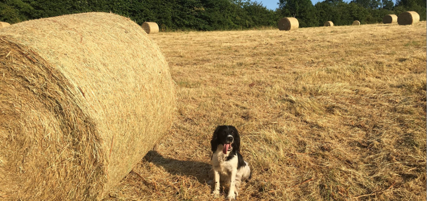

Alexander Pritchard
A gap year in my life
I didn’t waste any time on my gap year, I dived straight into new learning experiences, as I was gainfully employed at one of the top five largest supermarket chains in the United Kingdom, and manufactured and specialised in the retail occupation for a quarter year before discontinuing the position.
Working in a professional environment, immediately after my A level examinations, was beneficial as I quickly learnt responsibility and cooperation in a realistic industry-setting. Interacting with different types of customers brought me a new sense of self, lots of confidence and an increasingly good set of people-skills. I developed hugely in that period, and I will take forward this versatility into the world of Computer Science. Although I had learned so much from this line of work, there were crucial life lessons that it could not teach me, and so I decided change was necessary to develop further as a person and as a future employee in the Computing enterprise.

For the 12 months, I volunteered on a small farm in rural Herefordshire. Nowadays if you think of a farm, you tend to picture hundreds of acres of land with a large workforce and even larger machinery. However that isn’t the case for the farm I worked on. Run by a kind and fair, yet strict married couple who are used to doing all the work themselves, it was an intimate environment to work in, and the perfect one to learn how vital routine and discipline are in a professional dynamic. Every single day, no matter how harsh the conditions and without excuse or fail, I would procedurally tend to plants and crops, as well as feed, water and care for the animals. Learning how a small farm thrives in this economy made working in these conditions, with the livestock, even more rewarding, however I also developed relationships and have huge amounts of empathy for them.
Without a doubt, I acquired knowledge that the regular “spends-all-day-in-their-basement-programming” Computing student will never have, putting me at an advantage in the long term. Nothing on the farm was automated, and so I learned the reality and importance of hard manual labour, and furthermore, how developing machine learning, AI and robotics will affect it. I must have thought of one thousand different ways to program a robot to collect horse manure for me during my time there, but I understand and respect the importance of doing it yourself. Each task required a high level of vigilance that allowed no room for “slacking off”, but the enjoyment I got from a hard days work done right, my positive attitude, and my resilience meant I overcame even the hardest of days.
During this volunteering, I started baking on the side as a hobby, using fresh ingredients grown at the farm. I have a knack for it, as it's as simple as following an alogirthm. I realised first-hand the satisfaction of bringing a projection to completion, as I watched how delighted my two bosses were eating my very own blackberry and apple crumble served with warm homemade custard.